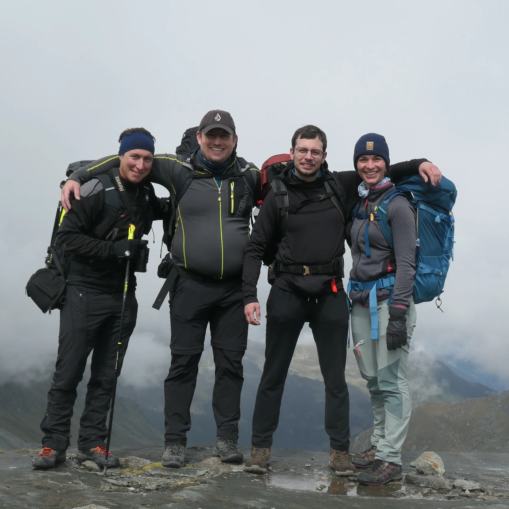
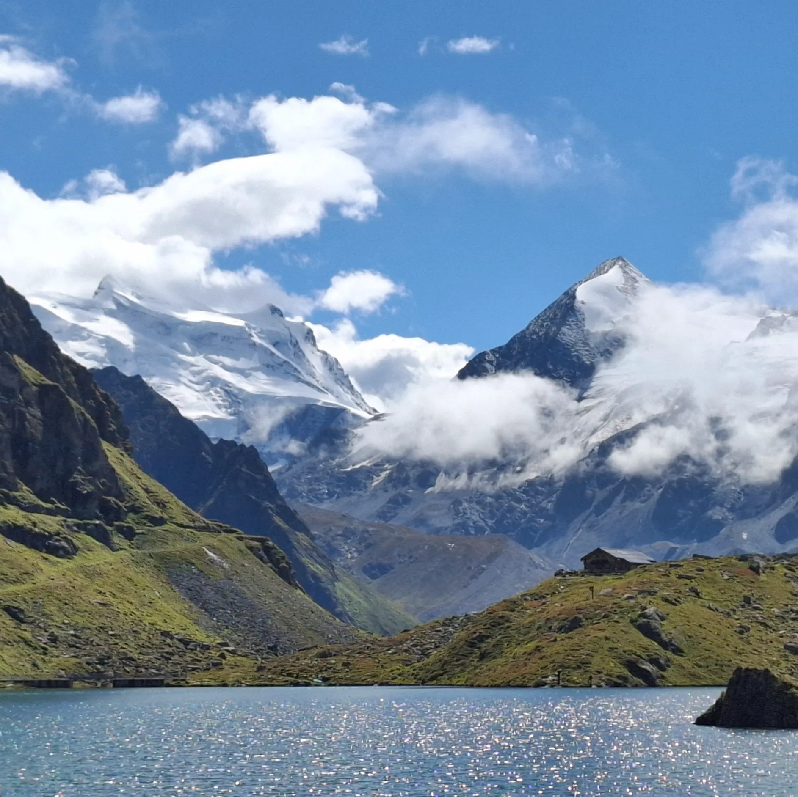
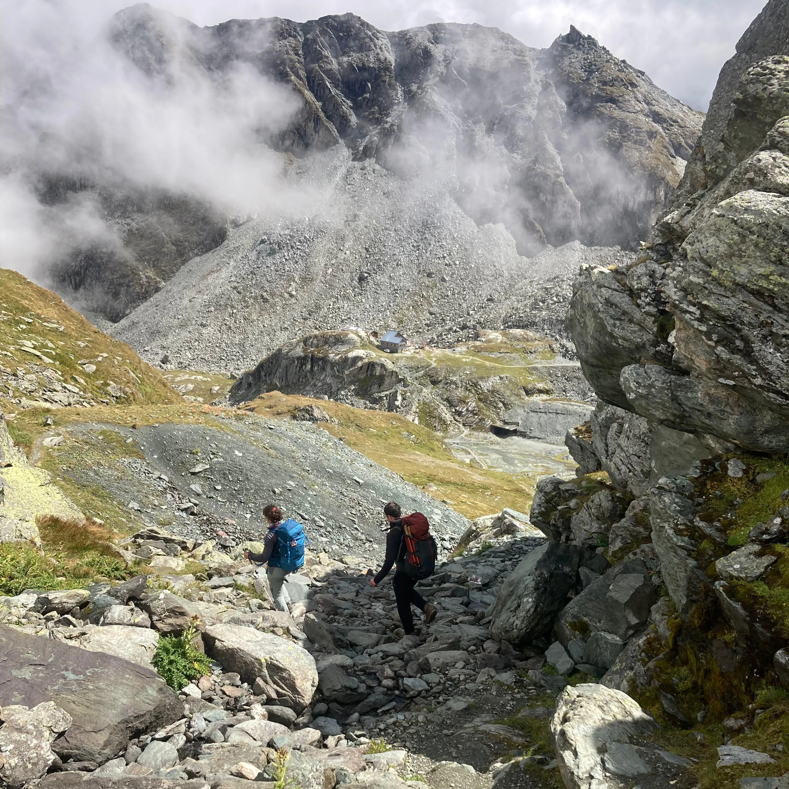
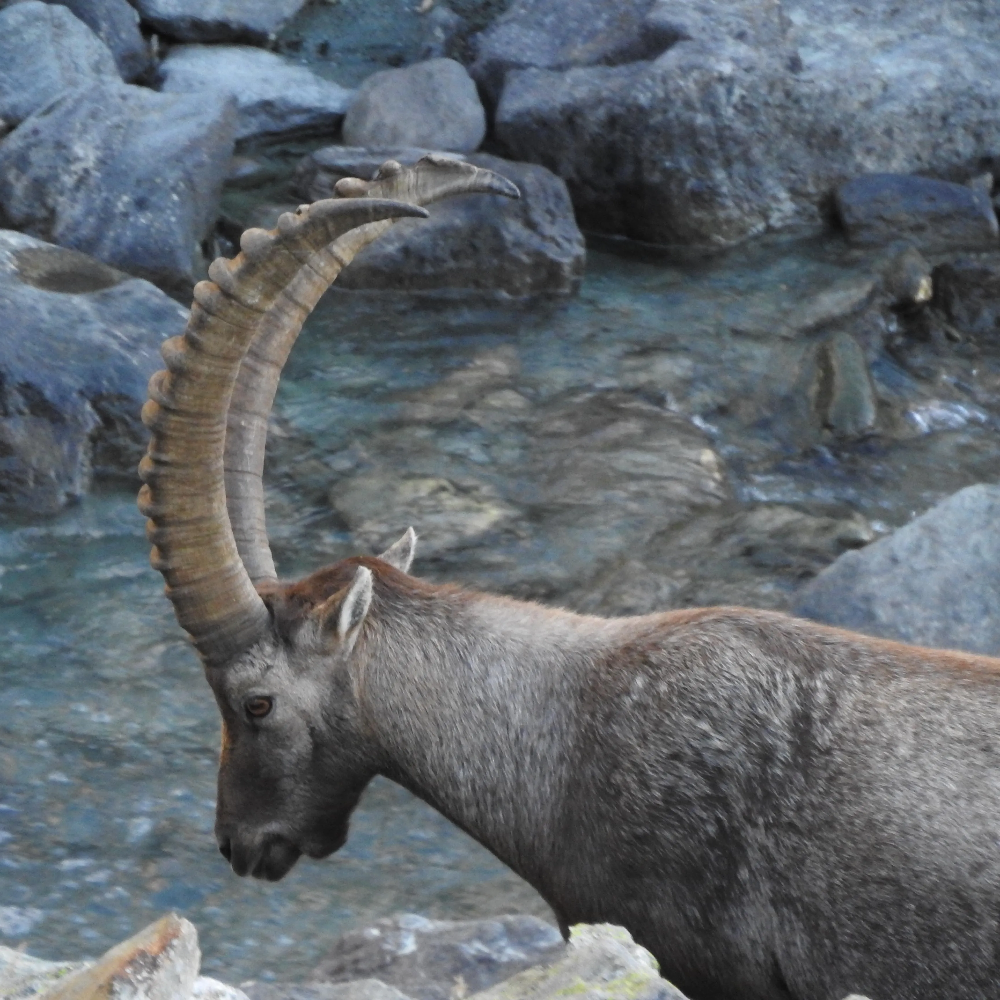
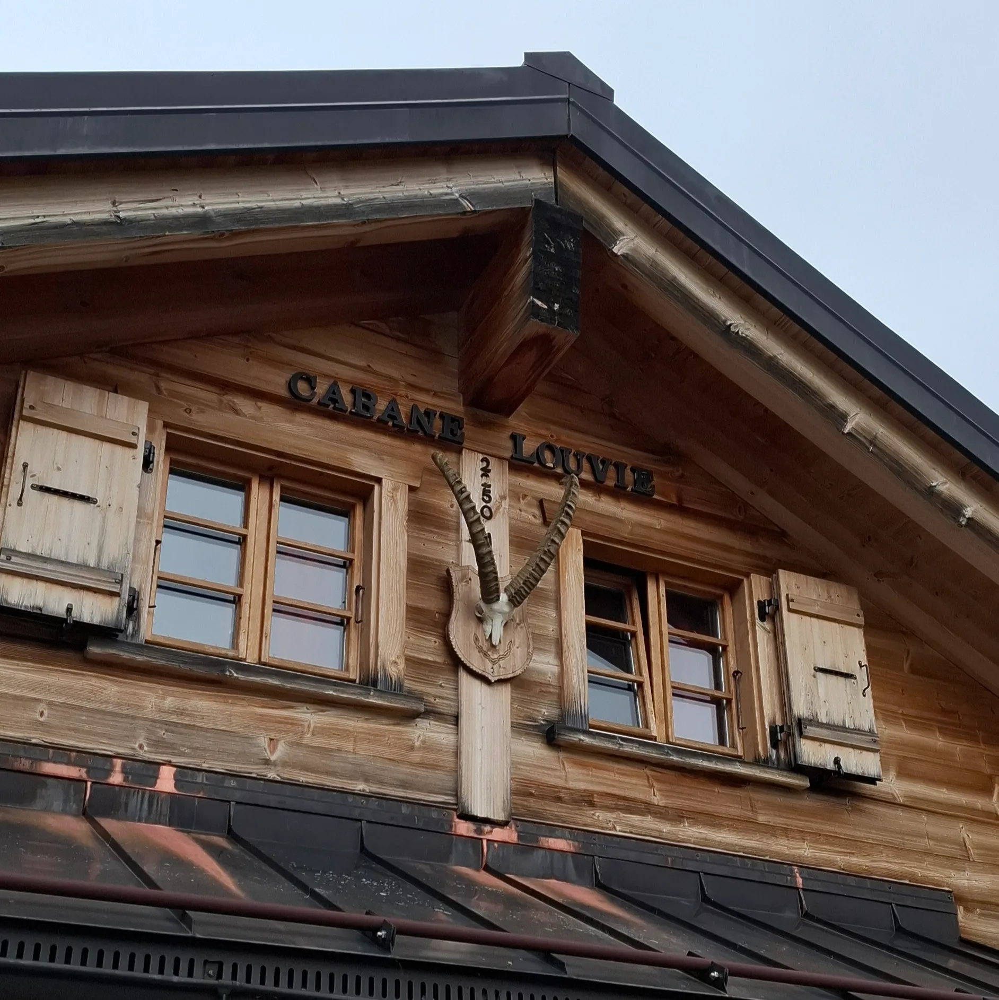
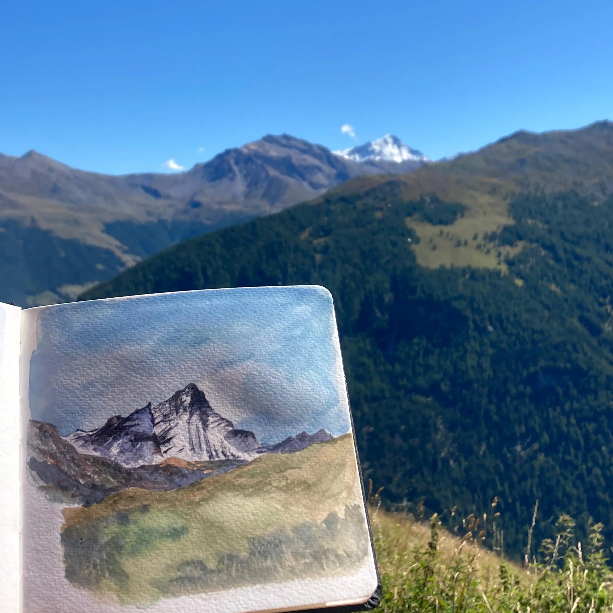

Une grande chute d’eau et des montagnes verdoyantes 🏞️, c’est l’accueil qu’on a eu à Fionnay pour commencer notre trek. Nous avons découvert le chemin qui dévoile le panorama sur le massif du Combin. 🏔️ Suite à quelques passages de nuages 🌬️, le Lac de Louvie s’est déployé devant nous. La cabane de Louvie surplombe ce lac, une belle construction en bois ornée par une tête de bouquetin à l’entrée. Nous y avons passé la première nuit. ✨
Le deuxième jour a commencé avec l'observation de la faune sauvage. 🐐 Des troupeaux de bouquetins surplombant la vallée dans laquelle nous nous sommes aventurés pour monter au Col de Louvie. Nous avons chevauché de gros rochers, trouver des edelweiss 💮 et la neige à 2800m d’altitude. C’est dans un cadre lunaire 🌕 que nous avons fait la pause du midi. Après de courtes averses, nous avons découvert le paysage grâce à une belle éclaircie. Une fois le Col de Prafleuri passé, nous avions plus qu'à descendre à la cabane pour s’y détendre.
Troisième et dernier jour, réveil matinal 🌄 avec les étagnes non loin de nous. Nous avons trouvé les troupeaux de mâles durant la descente. Au fil de la marche, nous avons observé le barrage de la grande Dixence, le Glacier de Cheilon et le Weisshorn. Nous avons profité de la cabane d’Essertse 🍹 pour y faire une pause. Le trek s’est terminé à les Collons avec une belle planchette méritée et la vue sur la Dent Blanche et le Cervin. 🎒





